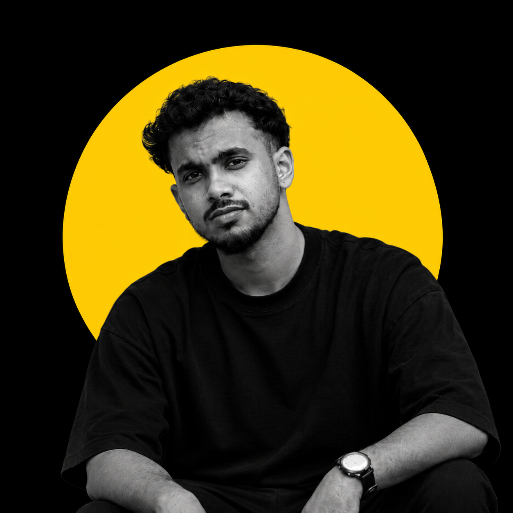

MAR 2025 — PRESENT
Freelance
Multimedia Designer
Social media visuals, reels, and promotional videos. Collaborating directly with clients from creative concepts through revisions.
INDEPENDENT MULTIMEDIA DESIGNER
BASED IN KERALA, INDIA
HELLO, I’M SRAYAS BABU
Graphic design. Moving images. Visual stories.
I turn creative ideas into content that connects.

THE SELECTED EDIT / PORTFOLIO
A collection of graphics, frames, and creative explorations.
Loading the collection…
01 / CREATIVE PRACTICE
From the first visual to the final cut,
every detail has a purpose.
Thoughtful visuals built to communicate. From promotional graphics and brochures to posters, banners, and social media creatives.
Editing that gives a story its rhythm. Short-form videos, social reels, promotional content, and post-production shaped for the platform and the audience.
Finding the detail that tells the bigger story. Photography and videography for events, activities, and multimedia campaigns, from capture through the final edit.
Platform-ready content with a consistent creative voice. Social media visuals, promotional campaigns, and AI-assisted content creation that bring new possibilities to the process.
02 / A LITTLE ABOUT ME
Curious by nature.
Creative by practice.
I’m Srayas, a multimedia designer based in Varkala, Kerala. I work at the intersection of graphic design, film, and photography to make ideas feel real.
My experience spans freelance creative projects, educational campaigns, and event storytelling. Whether I’m designing a poster or working on a final cut, I bring the same care to the concept, the craft, and the details.
Download my résumé PDF03 / THE JOURNEY
MAR 2025 — PRESENT
Multimedia Designer
Social media visuals, reels, and promotional videos. Collaborating directly with clients from creative concepts through revisions.
JUL — DEC 2024
Multimedia Designer / Video Editor
Promotional graphics, brochures, and campaign content for admissions and events. Short-form videos for campus news and student activities.
JUL 2023 — JUN 2024
Multimedia Designer / Photographer / Videographer
Event photography, videography, and post-production. Multimedia content for exhibitions, activities, and devotional campaigns.
CREATIVE EDUCATION
CDA Academy, Kochi · 2026
Eight months of graphic design, video editing, photography, videography, and AI-assisted content creation.
RECOGNITION
Best CinematographerCDA Academy
Media AwardSivagiri TV, Sivagiri Mutt
04 / YOUR NEXT IDEA STARTS HERE
LET’S CREATE SOMETHING THAT FEELS LIKE YOU.